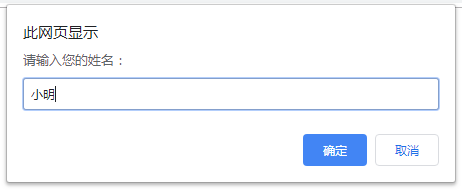
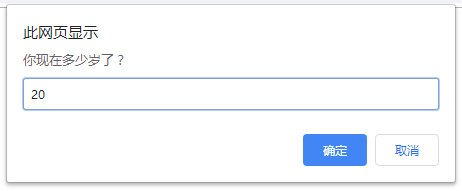
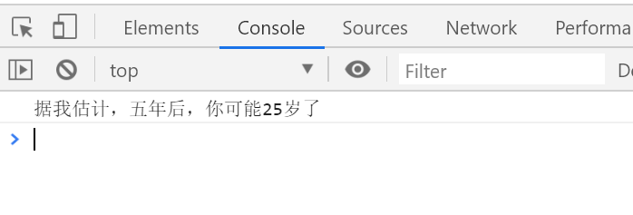

<!DOCTYPE html>
<html lang="en">
<head>
    <meta charset="UTF-8">
    <title>Title</title>
</head>
<body>
<script>
    // const  num = 10
    // console.log( num + 11) // 21
    // console.log( num + '11') // '1011'
    // console.log( num +  +'11') // 21

    // const  num = 10
    // console.log( typeof num + '11') // 'num11'
    // console.log( typeof (num + '11')) // string
    // console.log( typeof (num +  +'11')) // number

    /*
    ### 获取用户信息
    - 题目描述
      依次询问并获取用户的姓名、年龄、性别，收集数据之后在控制台依次打印出来。
      具体表现如下图：
    
    
    - 题目提示
      - 通过prompt来弹出提示框，收集用户信息
      - 通过变量保存数据
    */
    // let username = prompt("输入姓名")
    // let age = prompt("输入年龄")
    // let sex = prompt("输入性别")
    // console.log('你的姓名是:' + username + '年龄:' + age + '性别:' + sex)
    // console.log(`你的姓名是:${username} 年龄: ${age}性别:${sex}`)

    /*

    ### 增加年龄
    - 题目描述
      1、询问用户年龄，用户输入年龄后，把用户输入的年龄增加5岁
      2、增加5岁后，通过弹出框提示用户 “ 据我估计，五年后，你可能XX岁了”
      
      
    - 题目提示
      - 通过prompt来弹出提示框，收集用户信息
      - 通过变量保存数据
      - 转换数据类型(需要预习第二天的数据类型转换哟)
    */
    // let age = +prompt("请输入你的当前年龄")
    // alert(`你5年之后是：${age + 5} 岁`)

    /*
    ### 计算银行卡余额案例
    - 题目描述
      1、用户输入总的银行卡金额，依次输入本月花费的电费，水费，网费。
      2、页面打印一个表格，计算出本月银行卡还剩下的余额。
      
    - 题目提示
      - 思路：
        1.我们需要5个变量：银行卡总额、水费、电费、网费、银行卡余额
        2.银行卡余额= 银行卡总额 – 水费 –电费  - 网费
        3.第一步准备5个变量接受输入的数据
        4.第二步计算银行卡余额
        5.第三步页面打印生成表格，里面填充数据即可。
        6.当然可以提前把html页面搭好。
    */


</script>

</body>
</html>